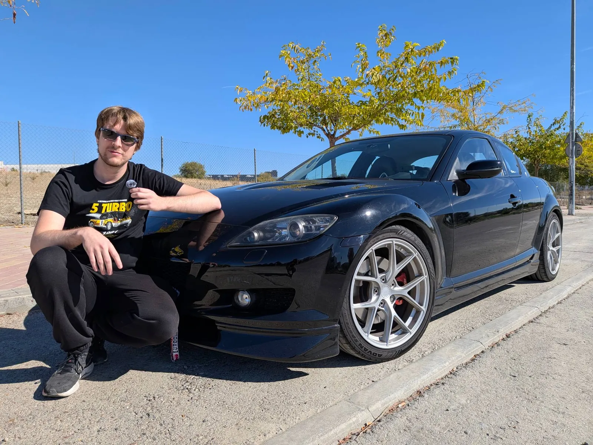
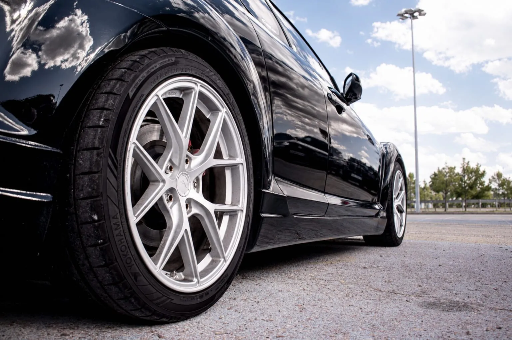
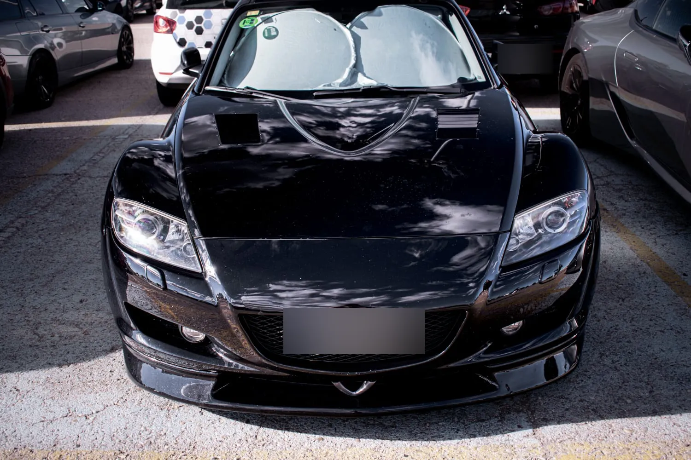
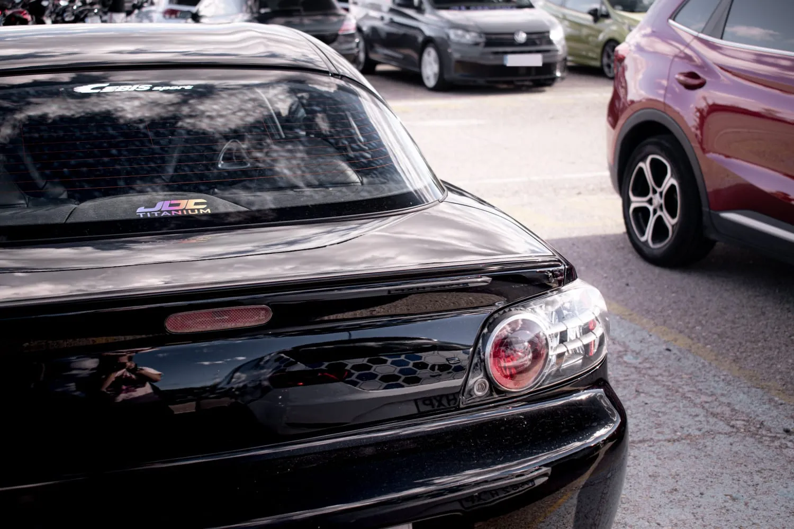
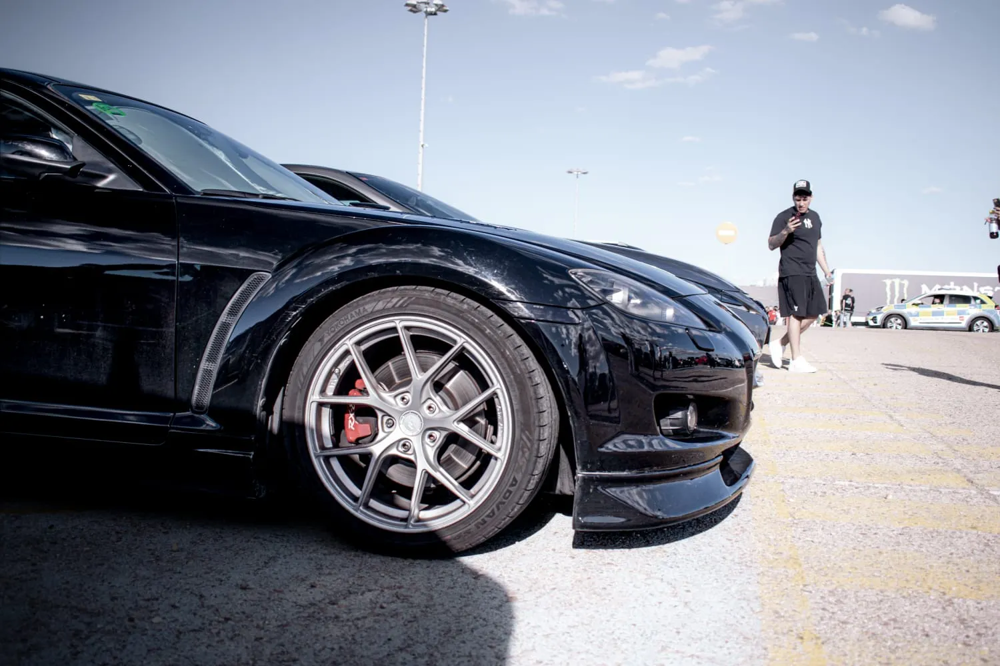
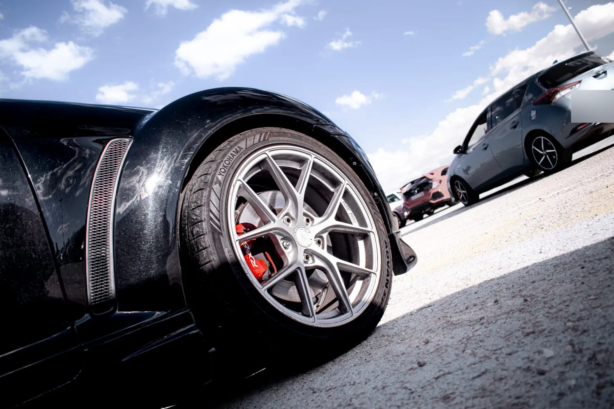
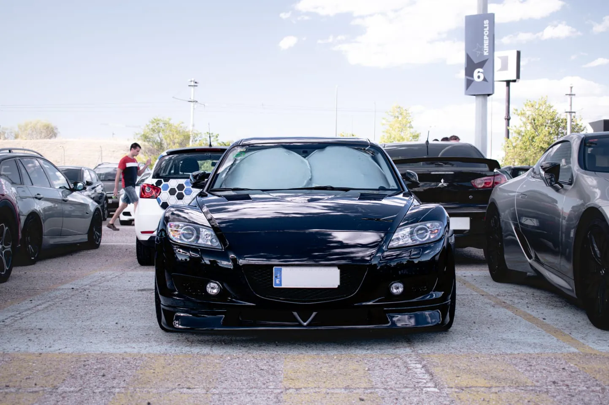
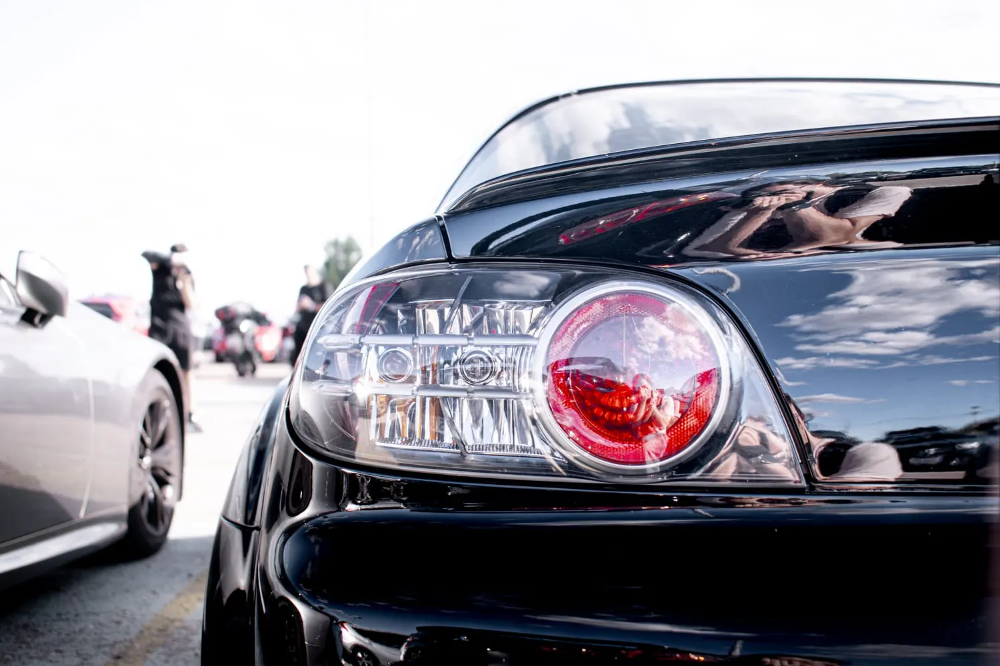
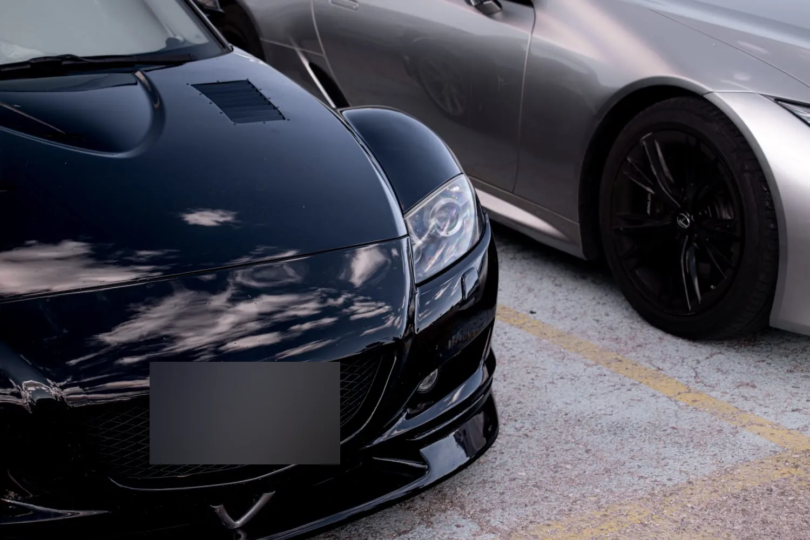

Mazda RX-8
Rotativo · de Mario «Terri»
El rotativo del club: un RX-8 de 2006, negro brillo, con 149.200 km y una lista de mejoras que no es corta.
El coche
Llegó porque tenía una espinita clavada: tener un rotativo. Y el RX-8 me encantaba desde pequeño.
La anécdota llegó el mismo día de la compra: casi me quedo tirado sin gasolina de camino a la playa, donde íbamos a comer.
Su historia se cuenta también en el canal: cómo es vivir con un motor rotativo, sus puntos débiles y cómo cuidarlo.
Ficha
- Motor
- Renesis 13B-MSP: rotativo de dos rotores, 1.308 cm³ (2 × 654 cm³)
- Potencia
- 231 CV (170 kW)
- Año
- 2006
- Color
- Negro brillo
- Kilómetros
- 149.200
- Motor (mejoras)
- Bujías y bobinas NGK
- Cables de bujía Magnecor
- Inyectores sobredimensionados
- Volante motor aligerado
- Embrague de kevlar
- Chasis y frenos
- Suspensión KW V3
- Frenos delanteros de Mazda 6 MPS (pinza de doble pistón)
- Estabilizadoras sobredimensionadas, delante y detrás
- Latiguillos metálicos
- Escape y gasolina
- Tramo final Japspeed
- Supresor de catalizador
- Bomba de gasolina DeatschWerks de 255 l/h
- Premix Motul 710 2T
- Estética e interior
- Llantas Japan Racing SL01 superligeras
- Lip delantero y taloneras
- Capó con salidas de aire
- Añadidos del paragolpes trasero
- Short shifter con synchro saver
- Apple CarPlay
- Reloj de temperatura y rpm
Galería








